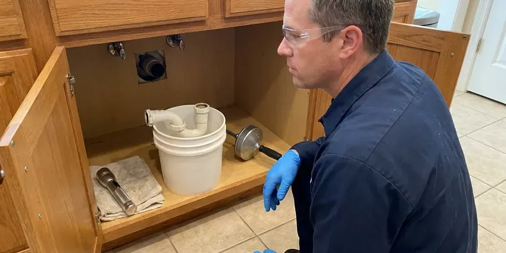

Water Line Repair in Bridgeport, CT
Dealing with a leaking water line in Bridgeport, CT can be a real headache. GLV Plumbing provides fast and reliable repair services to restore your plumbing.
- Warrantied work
- Upfront Pricing
- Experienced Technicians
- Licensed Connecticut Plumbers

Expert Water Line Repair Services in Bridgeport, CT.
Call now and a licensed plumber will pinpoint your water line leak with electronic listening gear before anyone picks up a shovel.
Professional Water Line Repair Services in Bridgeport, CT
At GLV Plumbing, we're equipped to handle all types of water line problems, from small drips to major pipe bursts. Our skilled plumbers in Bridgeport, CT use advanced diagnostics to accurately pinpoint the source of the trouble, so the repair lasts.
Our expertise includes:
- Accurate leak detection technology
- Acoustic and tracer gas leak detection on buried mains
- Trenchless repair options

Additional Plumbing Maintenance Services in Bridgeport, CT
Our maintenance and specialty plumbing services in Bridgeport, CT catch small problems before they become emergencies.


Customers
Why Choose GLV Plumbing for Water Line Repair in Bridgeport, CT?
We are familiar with the common causes of water line failure in Connecticut, from aging galvanized pipes to PVC issues, and provide solutions built to last.
- Local Expertise, Our team understands the plumbing challenges faced by homeowners in Connecticut, including issues related to soil movement and seasonal ground shifts.
- Precise Locating, Ground microphones and line tracers let us dig one hole instead of several.
- Lasting Materials, We replace failed sections with Type K copper or PEX rated for direct burial.
Citywide Coverage
We repair water lines in every neighborhood of Bridgeport, from older homes with original galvanized mains to new subdivisions plumbed with PEX. Our trucks are stocked for the pipe sizes and meter setups used by local water providers.
Experienced Team
Our team of licensed plumbers has extensive experience with all types of water line repairs, from traditional excavation to modern trenchless methods. We've seen and fixed it all in Connecticut homes.
Safety-First Approach
Safety is paramount in all our water line repair projects. We carefully follow all safety protocols and local plumbing codes to protect your property and our technicians during the repair process.
Trusted Certified Bridgeport Plumbing Services Professionals
At GLV Plumbing, we take pride in providing licensed, certified plumbing services throughout Bridgeport, CT. Backed by recognized industry credentials, our experienced plumbers combine technical skill with genuine customer care. Whether it is repair, installation, or maintenance, we follow strict safety and quality standards to deliver long-lasting results you can trust.
Call Us Now PHCC Plumbing Contractor Recognition
PHCC Plumbing Contractor Recognition Better Business Bureau (BBB) Accreditation
Better Business Bureau (BBB) Accreditation Angi Certified Pro
Angi Certified Pro ISO 9001 Quality Management Certification
ISO 9001 Quality Management CertificationProfessional Water Line Repair Services in Bridgeport, CT
Main Water Line Replacement in Bridgeport, CT
When repairs are no longer cost-effective due to extensive damage or persistent issues, a full main water line replacement may be necessary. This often applies to older homes in Bridgeport, CT with original galvanized steel or polybutylene pipes that are prone to corrosion and leaks. We offer full replacement services, upgrading your system with durable, modern materials like PEX or copper for a reliable water supply for decades to come. We handle all required permits and inspections.

Emergency Water Line Repair in Bridgeport, CT
A burst water line is a true emergency, which can cause extensive water damage and make your home unlivable. GLV Plumbing offers rapid-response emergency water line repair services across Bridgeport, CT. Our plumbers are equipped to handle sudden breaks, providing immediate shut-off and repair to prevent further damage. Feel free to call us anytime, day or night, if you suspect a major water line failure. Quick action is essential to limit the impact of a severe leak.
Slab Leak Water Line Repair in Bridgeport
Slab leaks, where water lines running beneath your home's concrete foundation leak, are a especially challenging issue. Housing in Connecticut is among the older stock in the country, with many homes still using galvanized supply pipe and original cast iron drains. These leaks can undermine your foundation, leading to serious structural damage. We use specialized listening devices and camera inspections to pinpoint slab leaks precisely and offer repair options including direct slab penetration, re-routing, or pipe lining. Addressing a slab leak promptly in Bridgeport is crucial to prevent extensive, costly foundation damage.
Main Water Line Repair in Bridgeport
The main water line brings water from the municipal supply to your home. When this line leaks or breaks, it can cause serious water loss, foundation damage, and low water pressure. Our team specializes in diagnosing and repairing main water line issues, from pinpoint leaks to full pipe ruptures, so your home's primary water source is secure. We use advanced detection methods to find the exact location of the problem, limiting excavation and disruption to your property in Bridgeport. We also check for common issues like root intrusion or shifting soil.
Galvanized Water Line Replacement in Bridgeport, CT
Many homes built before the 1970s still have galvanized steel service lines that rust from the inside. Homeowners on well water near Bridgeport should test regularly, since acidic water can cause blue-green stains and pinhole leaks in copper. Hard water speeds up scale buildup, which chokes flow and causes rust-colored water. Patching galvanized pipe rarely lasts because the surrounding pipe is just as corroded. We usually recommend replacing the full run from meter to house with copper or PEX, which restores pressure and ends repeat leaks.
Water Line Repair at the Meter in Bridgeport, CT
Leaks often start at the compression fittings and couplings right next to the meter box. Shifting soil and heavy traffic over the box can loosen those joints over time. We determine whether the leak is on the utility side or the customer side, since the water provider is responsible for the meter and the pipe before it. When the leak is yours, we replace the fittings and the customer shutoff valve on the same trip.
Water Pressure Restoration in Bridgeport
Low water pressure can be a frustrating symptom of an underlying water line problem, such as blockages, leaks, or a failing pressure regulator. In Bridgeport, if your water pressure has dropped suddenly, it's important to have your main water line inspected. We diagnose the cause of low pressure, whether it's mineral buildup restricting flow or a hidden leak, and perform the needed repairs or replacements to restore strong, consistent water pressure throughout your home.

Commercial Water Line Services in Bridgeport, CT
Businesses in Bridgeport, CT rely on a steady and dependable water supply, and a damaged water line can lead to serious operational disruptions. GLV Plumbing provides complete commercial water line repair and maintenance services, understanding the demands of commercial plumbing systems. We work fast and efficiently to limit downtime, addressing issues like large-diameter pipe leaks, backflow prevention, and complex underground repairs, so your business's water service stays fully functional.
Water Line Repair Near Me in Bridgeport, CT
If you're searching for 'water line repair near me' in Bridgeport, CT, GLV Plumbing is your local expert. We prioritize rapid response times because we know a water line issue can't wait. Our team is always close by, ready to provide professional and prompt service.
Our local presence in Bridgeport means faster response times and a team familiar with the area's plumbing challenges. We're committed to serving our neighbors with honesty and skill, making us a top choice for water line repair near me. Trust GLV Plumbing for reliable service right in your neighborhood.
GLV Plumbing at a Glance
- Fully licensed plumbing team covering Bridgeport, CT
- Same-day appointments and 24/7 emergency response
- Clear written estimates, no hidden fees
- 4.8-star rated by 946+ Connecticut customers
Bridgeport Map
Bridgeport Information
- Population
- 148,028
- Area codes
- 203/475/914
- Service area
- Bridgeport and communities within 40 miles
- Nearby
- Milford, West Haven, Norwalk, New Haven
Homeowners on well water near Bridgeport should test periodically, since acidic water can cause blue-green stains and pinhole leaks in copper. In Bridgeport, CT, mineral scale and shifting soil slowly damage buried service lines, so prompt water line repair protects your landscaping, foundation and water bill.
Expert Services
Trust our professionals for reliable GLV Plumbing solutions in Bridgeport, CT.
Our Specialized Plumbing Services in Bridgeport, CT
At GLV Plumbing, we provide a complete range of plumbing services across Bridgeport, CT. From leak detection to full system installations, our team ensures fast, precise, and affordable service for both residential and commercial properties. Explore our core services below:


How Our Water Line Repair Process Works in Bridgeport, CT
Our water line repair process is built to find the leak quickly and keep digging to a minimum.
Request a Quote
Call (860) 487-7330 and tell us what you are seeing, such as wet ground, low pressure or a high bill. We schedule a licensed plumber, frequently the same day.
Locate the Leak
We isolate the line, test pressure and use acoustic equipment to pinpoint the leak. You get a written repair or replacement quote before any digging.
Repair and Test
We expose the pipe, make the repair with code-approved materials and pressure test the line. Then we flush it, backfill and tidy up the work area.
Frequently Asked Questions About Water Line Repair in Bridgeport
A spot repair on an accessible service line usually runs $350 to $1,500 depending on depth and access. Full replacement from meter to house usually costs $1,800 to $5,500, and trenchless replacement often falls between $3,000 and $7,000. We give you a written price before starting.
Most standard water line repairs can be completed within a few hours to a full day, depending on the severity and accessibility of the leak. More complex issues, like trenchless pipe replacement or extensive excavation for a main line, might take 1-3 days. We always aim for the fastest, most efficient fix without compromising quality.
In most communities the water provider owns the meter and the pipe on the street side of it. The homeowner is in charge of the service line from the meter to the house. We check which side the leak is on before quoting you.
Yes. Our workmanship is warrantied, and new pipe and fittings carry the manufacturer warranty. We explain the coverage on your written estimate before work begins.
While some very minor, accessible leaks might seem DIY-friendly, we do not recommend attempting water line repairs yourself, especially for underground or main lines. Improper repairs can lead to greater damage, code violations, and costly future problems. Professional plumbers have the specialized tools, experience, and knowledge of Connecticut plumbing codes to deliver a safe and lasting repair.
For water line replacements, we mainly use durable and code-compliant materials such as PEX (cross-linked polyethylene) and copper. PEX is flexible and resistant to freezing, while copper offers excellent longevity and corrosion resistance. The best material for your home in Bridgeport will depend on your specific needs, budget, and local regulations.
A homeowner can sometimes tighten a leaking fitting at an exposed hose bib. Buried service line repairs require locating, safe excavation, 811 utility marking and code-approved fittings. Mistakes can cause bigger leaks, so most homeowners hire a licensed plumber.
Yes, for most major water line repairs or full replacements in Connecticut, particularly those involving excavation or changes to the main line, a permit from your local municipal authority is typically required. GLV Plumbing handles all necessary permitting so your repair is fully compliant with local building and plumbing codes.
What People Are Saying About Our Plumbing Experts?

Laura S.
I scheduled a water heater replacement, and the team made the process smooth and affordable. The new unit works perfectly, and they cleaned up after completing the job.
Water Heater Replacement · Stamford, CT
Daniel K.
A pipe burst at 11 pm and they actually answered. The plumber showed up within the hour, shut everything down, and had us back to normal the next morning. Could not ask for more.
Emergency Plumbing · Milford, CT
Robert G.
The trenchless sewer replacement saved our front yard. They walked us through the camera inspection footage first so we knew exactly what we were paying for.
Sewer Line Replacement · Danbury, CTSofia M.
Two new toilets installed in one visit, no mess left behind, and the tech even adjusted a faucet he noticed was dripping. Fair pricing and really friendly.
Toilet Installation · Milford, CT
Mark T.
When our office needed drain cleaning, GLV Plumbing provided quick, reliable service. The plumber arrived on time and made sure every drain flowed perfectly before leaving. Very satisfied.
Drain Cleaning · Danbury, CT
Patricia H.
We had a slab leak that two other companies could not find. GLV Plumbing located it in under an hour, explained our options, and the price matched the quote to the dollar.
Slab Leak Repair · Milford, CT